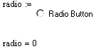
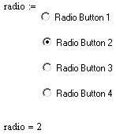

Mathsoft RadioButton Control |
| Overview |
The Mathsoft RadioButton control allows you to select between an arbitrarily large collection of choices. Each member in the radio button group returns either a 1 or a 0 (on or off), much like the related PushButton and CheckBox controls. More sophisticated behavior is programmed through a script using the Button class, and other features of your scripting language.
You can change the appearance of a radio button group by right-clicking and choosing Properties, or, in some cases, you can access formatting properties through the script.
| Simple Annotated Example |
Here is an example that shows the default script and the resulting behavior of the RadioButton control in the worksheet.
Sub RadioBtnEvent_Start()
Rem TODO: Add your code here
End Sub
Sub RadioBtnEvent_Exec(Inputs,Outputs)
Outputs(0).Value = RadioBtn.SelectedButton()
End Sub
Sub RadioBtnEvent_Stop()
Rem TODO: Add your code here
End Sub
Sub RadioBtn_Click()
RadioBtn.Recalculate()
End Sub
Sub RadioBtn_SelectionChange()
RadioBtn.Recalculate()
End Sub

In the script, there are five events, Start, Exec, Stop, Click, and Selection Change. The Exec event is where inputs and outputs can be processed, namely returning the state of the button. In the case of radio buttons, this is where state changes are handled because both check boxes and radio buttons support the Check property which delivers the state of the button. Procedures for formatting the button itself can be taken care of in the Start event or using the Properties dialog box. The Click event is where the control is re-executed after the user has clicked the control. The Selection Change event is needed to support groups of radio buttons in which case a change of state to the individual radio button must take place when another button in the group is clicked. Here are the scripts for a group of radio buttons working together, and their effect on the appearance and behavior of the controls:
First Radio Button |
All Other Radio Buttons |
Sub RadioBtnEvent_Start()
|
Sub RadioBtnEvent_Start()
|

In the script for the first button, the group identifier and the button identifier are specified, and the label has been changed. All other aspects of the script remain the same. Output is specified as the number of the radio button selected. In the script for the remaining buttons, the group and button identifiers are updated and the label changed, but there is no output specified. Because the script for these buttons does not require an output variable, you can remove it by right-clicking on the control and selecting Remove Output Variable from the menu.
Here is a sample file that demonstrates the use of radio buttons in a worksheet.